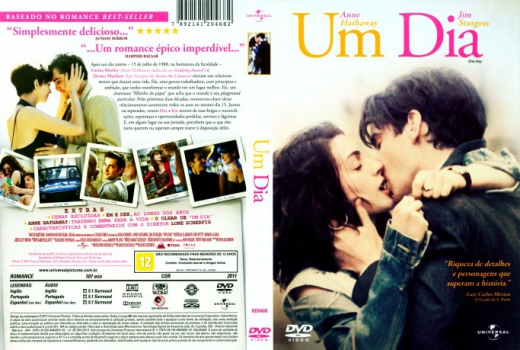

Um Dia (2011)


Vinte anos. Duas pessoas...

Avaliação (TMDb):


7.4/10 (3.8K votos)
Avaliação (Usuário):
Outro Título:One Day
País:United States, 107 minutos
Idiomas falados:Espanhol, Inglês, Português
Gênero(s):Drama, Romance
Diretor(s):Lone Scherfig
Codec:MPEG-2 (DVD)
Número: 5328
Sinopse:
Emma Morley e Dexter Mayhew sentem uma conexão especial desde o dia em que se conheceram. Apesar de seguirem rumos diferentes, eles acabam se reencontrando todos os anos no dia 15 de julho.
Elenco:
Anne Hathaway, Jim Sturgess, Tom Mison, Jodie Whittaker, Rafe Spall
Tipo de mídia: DVD R/RW,
Legendas: Espanhol, Inglês, Português, Sem Legendas
Alugado: Não
Tela: Anamorphic Widescreen